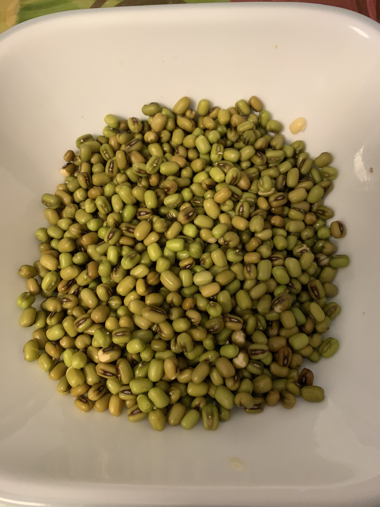
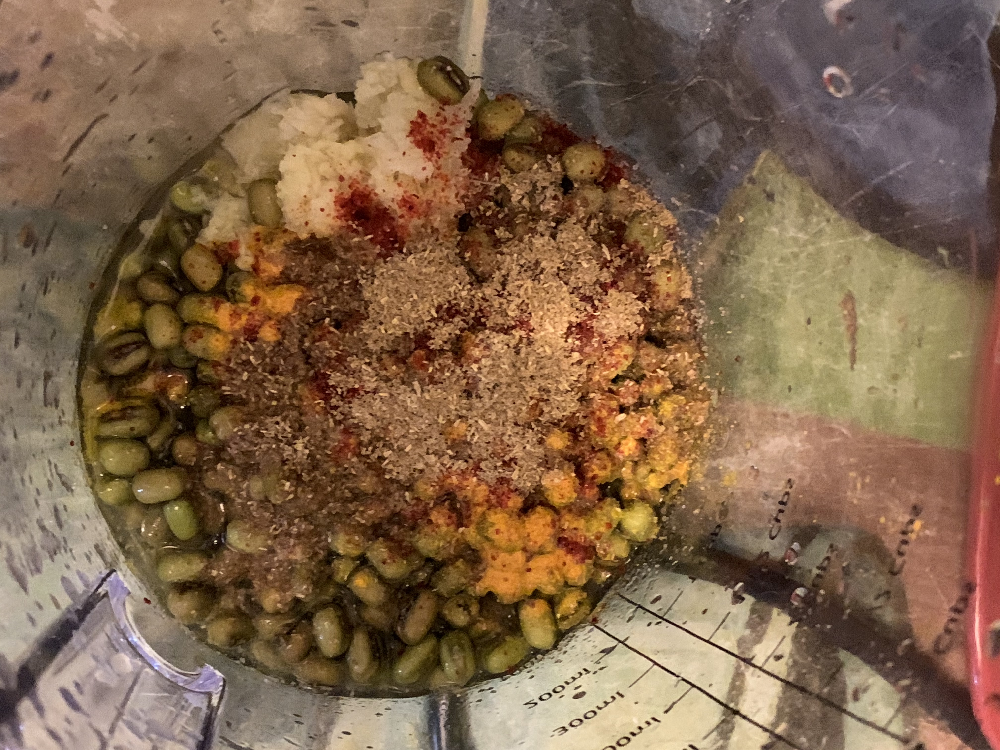
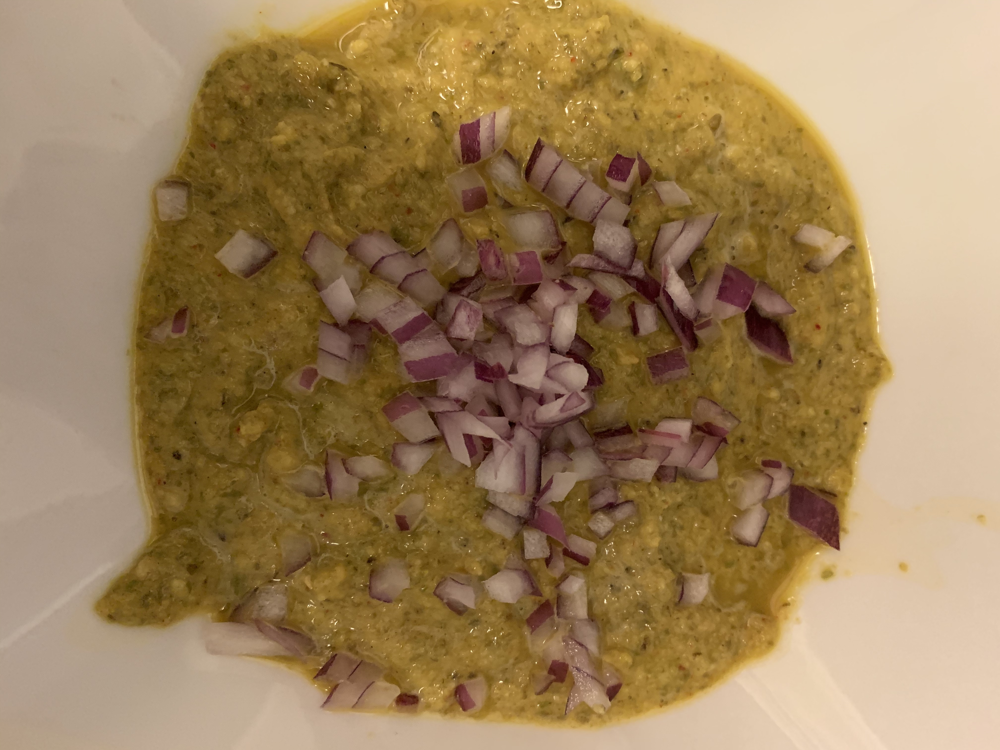

Moong Dal Dosa are thin crepes made with Whole Moong Dal and spices. These protein packed flavorful moong dal dosa has all the important ingredients, which a breakfast requires - healthy, tasty and quick meal that you can put together. It is similar in flavor and presentation to traditional dosas but don’t require fermenting.
Preparation
Take 1 cup Green Whole Moong and soak it in water for minimum 5-6 hours.

Take a blender jar and add the following to it:
Soaked Moong
1/2 inch piece of Ginger
4-5 cloves of Garlic
3 Small Green Chilies (Adjust as per individuals spice level)
1/4 tspn Turmeric
1 tspn Coriander & Cumin powder
Salt as per taste
Add water as required.

Blend it to a pourable consistency.
Ex: Like pancake batter.
Take the batter out of blender and pour it in a bowl
Add finely chopped onions to the batter.

The Making
Take a cast iron pan (can substitute any non-stick pan), turn on the gas/stove and let the pan heat up before pouring the batter.
Take a spoon-full of batter and spread it on the pan like a crepe.
Once little cooked, add olive oil (or oil of your choice) on the sides of the crepe and flip it after 4-5 seconds.
Repeat same on the other side as well.
Once the crepe is little golden brown on both the sides, remove it from the pan.